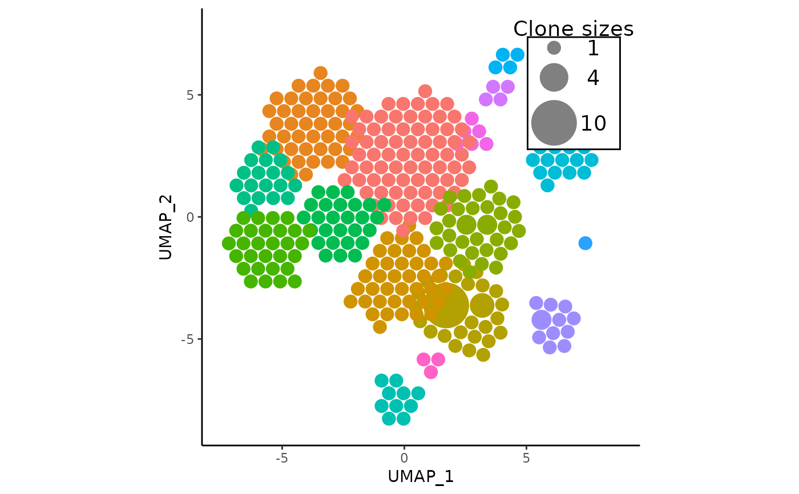
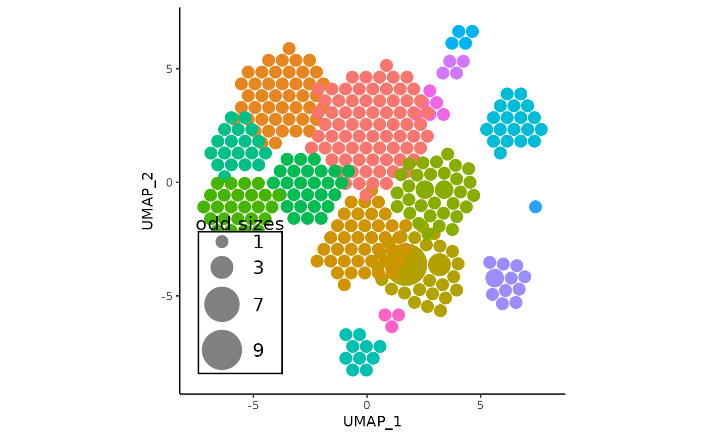

![[Stable]](figures/lifecycle-stable.svg)
This function has most of the parameters related to legend in APOTCPlot, and can plot a new / override the current legend. However, it is very important that the input plot to the function is a plot generated solely by APOTCPlot or vizAPOTC due to it being a custom ggplot object. It will not override or erase any additional layers that the user/other functions have added. To just remove the legend, see removeLegend.
Usage
overlayLegend(
apotc_ggplot,
legend_sizes = "auto",
legend_position = "auto",
legend_buffer = 0.2,
legend_color = "#808080",
legend_spacing = "auto",
legend_label = "Clone sizes",
legend_text_size = 5,
add_legend_background = TRUE,
add_legend_centerspace = 0,
linetype = "blank",
res = 360L
)Arguments
- apotc_ggplot
- legend_sizes
numeric vector. Indicates the circle sizes to be displayed on the legend, and will always be sorted from smallest to greatest. Defaults to
"auto"which estimate a reasonable range of sizes to display.- legend_position
character or numeric. Can be set to either
"top_left","top_right","bottom_left","bottom_right"and places the legend roughly in the corresponding position. Otherwise, can be a numeric vector of length 2 indicating the x and y position of the topmost (smallest) circle of the legend.- legend_buffer
numeric. Indicates how much to "push" the legend towards the center of the plot from the selected corner. If negative, will push away
- legend_color
character. Indicates the hex color of the circles displayed on the legend. Defaults to the hex code for a gray tone
- legend_spacing
numeric. Indicates the horizontal distance between each stacked circle on the size legend. Defaults to
"auto"which will use an estimated value depending on plot size- legend_label
character. The title of the legend, which defaults to
"clone sizes.- legend_text_size
numeric. The text size of the letters and numbers on the legend
- add_legend_background
logical. If
TRUE, will add a border around the legend and fill the background to be white, overlaying anything else.- add_legend_centerspace
numeric. An additional amount of distance changed between the circle sizes on the left side of the legend and the numbers on the right. Useful to set to around 0.5 (or more / less) when there are particularly large clone sizes that may cover the numbers.
- linetype
The type of outline each circle should have. defaults to
"blankmeaning no outline. More information is in the function documentation ofggforce::geom_circle.- res
The number of points on the generated path per full circle. From plot viewers, if circles seem slightly too pixelated, it is recommended to first try to export the plot as an
.svgbefore increasingresdue to increased plotting times from ggforce::geom_circle.
Value
A ggplot object of the APackOfTheClones clonal expansion plot of the
seurat object. There is an additional 10th element in the object named
"APackOfTheClones" used by other functions in this package and shouldn't
interfere with any other ggplot functionality. (As far as currently known)
Details
The size legend on APackOfTheClones plots are simply a collection of
annotation layers of the rect, text, circle geoms. Therefore it
isn't quite a ggplot legend. In the actual ggplot object, the $layers
element should all be named with an empty character "", and those
that comprise the annotation layers of the legend should be named whatever
APackOfTheClones:::.ApotcLegendLayerName is. Note that this is simply
an implementation detail that the user should not interfere with.
Examples
library(magrittr)
# create a plot with a legend
apotc_plot <- vizAPOTC(get(data("combined_pbmc")), verbose = FALSE)
# reposition the legend to top right
overlayLegend(apotc_plot, legend_position = "top right")

# use different sizes and label - may be nice to use the pipe
apotc_plot %>% overlayLegend(
legend_sizes = c(1, 3, 7, 9),
legend_label = "odd sizes"
)
